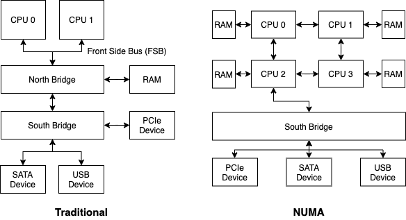
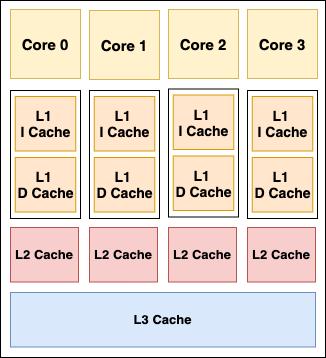
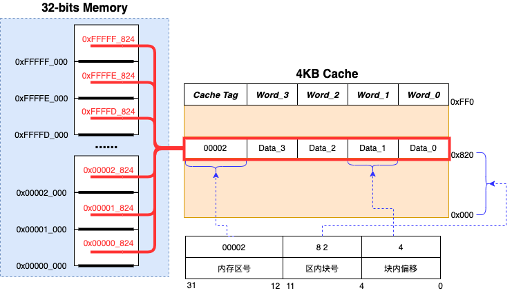

<!DOCTYPE html>
<html lang="cn">
<head>
  <meta charset="UTF-8">
<meta name="viewport" content="width=device-width, initial-scale=1, maximum-scale=2">
<meta name="theme-color" content="#222">
<meta name="generator" content="Hexo 5.3.0">
  <link rel="apple-touch-icon" sizes="180x180" href="/images/apple-touch-icon-next.png">
  <link rel="icon" type="image/png" sizes="32x32" href="/images/favicon-32x32-next.png">
  <link rel="icon" type="image/png" sizes="16x16" href="/images/favicon-16x16-next.png">
  <link rel="mask-icon" href="/images/logo.svg" color="#222">

<link rel="stylesheet" href="/css/main.css">

<link rel="stylesheet" href="https://fonts.loli.net/css?family=Noto Serif SC:300,300italic,400,400italic,700,700italic&display=swap&subset=latin,latin-ext">
<link rel="stylesheet" href="/lib/font-awesome/css/all.min.css">

<script id="hexo-configurations">
    var NexT = window.NexT || {};
    var CONFIG = {"hostname":"zobinhuang.github.io","root":"/","scheme":"Pisces","version":"7.8.0","exturl":false,"sidebar":{"position":"left","width":180,"display":"hide","padding":10,"offset":12,"onmobile":false},"copycode":{"enable":false,"show_result":true,"style":"flat"},"back2top":{"enable":true,"sidebar":true,"scrollpercent":true},"bookmark":{"enable":true,"color":"#FF4136","save":"manual"},"fancybox":false,"mediumzoom":false,"lazyload":false,"pangu":false,"comments":{"style":"tabs","active":null,"storage":true,"lazyload":false,"nav":null},"algolia":{"hits":{"per_page":10},"labels":{"input_placeholder":"Search for Posts","hits_empty":"We didn't find any results for the search: ${query}","hits_stats":"${hits} results found in ${time} ms"}},"localsearch":{"enable":false,"trigger":"auto","top_n_per_article":1,"unescape":false,"preload":false},"motion":{"enable":true,"async":false,"transition":{"post_block":"fadeIn","post_header":"slideDownIn","post_body":"slideDownIn","coll_header":"slideLeftIn","sidebar":"slideUpIn"}}};
  </script>

  <meta name="description" content="img{margin-left: 20px; margin-right: 20px;}     #table th{text-align:center;}     #table td{text-align:center;}     p{margin-left: 15px; margin-right: 15px;}     .div_licence{font-size: 16px; wo">
<meta property="og:type" content="website">
<meta property="og:title" content="内存 与 Cache">
<meta property="og:url" content="https://zobinhuang.github.io/sec_learning_backup/Tech_Advanced_Network/Infrastructure_DPDK_2_Cache_And_Memory/index.html">
<meta property="og:site_name" content="Zobin">
<meta property="og:description" content="img{margin-left: 20px; margin-right: 20px;}     #table th{text-align:center;}     #table td{text-align:center;}     p{margin-left: 15px; margin-right: 15px;}     .div_licence{font-size: 16px; wo">
<meta property="og:locale">
<meta property="og:image" content="https://i.creativecommons.org/l/by-nc-nd/4.0/88x31.png">
<meta property="og:image" content="https://zobinhuang.github.io/sec_learning_backup/Tech_Advanced_Network/Infrastructure_DPDK_2_Cache_And_Memory/pic/xxx.png">
<meta property="og:image" content="https://zobinhuang.github.io/sec_learning_backup/Tech_Advanced_Network/Infrastructure_DPDK_2_Cache_And_Memory/pic/numa.png">
<meta property="og:image" content="https://zobinhuang.github.io/sec_learning_backup/Tech_Advanced_Network/Infrastructure_DPDK_2_Cache_And_Memory/pic/cache.png">
<meta property="og:image" content="https://zobinhuang.github.io/sec_learning_backup/Tech_Advanced_Network/Infrastructure_DPDK_2_Cache_And_Memory/pic/direct_mapped_cache.png">
<meta property="article:published_time" content="2022-02-10T14:39:10.053Z">
<meta property="article:modified_time" content="2021-11-28T14:36:17.725Z">
<meta property="article:author" content="Zhuobin Huang">
<meta property="article:tag" content="Zobin">
<meta property="article:tag" content="黄卓彬">
<meta property="article:tag" content="zobinHuang">
<meta property="article:tag" content="网络工程">
<meta property="article:tag" content="Networking Engineering">
<meta name="twitter:card" content="summary">
<meta name="twitter:image" content="https://i.creativecommons.org/l/by-nc-nd/4.0/88x31.png">

<link rel="canonical" href="https://zobinhuang.github.io/sec_learning_backup/Tech_Advanced_Network/Infrastructure_DPDK_2_Cache_And_Memory/">


<script id="page-configurations">
  // https://hexo.io/docs/variables.html
  CONFIG.page = {
    sidebar: "",
    isHome : false,
    isPost : false,
    lang   : 'cn'
  };
</script>

  <title>内存 与 Cache | Zobin
</title>
  


  <noscript>
  <style>
  .use-motion .brand,
  .use-motion .menu-item,
  .sidebar-inner,
  .use-motion .post-block,
  .use-motion .pagination,
  .use-motion .comments,
  .use-motion .post-header,
  .use-motion .post-body,
  .use-motion .collection-header { opacity: initial; }

  .use-motion .site-title,
  .use-motion .site-subtitle {
    opacity: initial;
    top: initial;
  }

  .use-motion .logo-line-before i { left: initial; }
  .use-motion .logo-line-after i { right: initial; }
  </style>
</noscript>

<link rel="alternate" href="/atom.xml" title="Zobin" type="application/atom+xml">
</head>

<body itemscope itemtype="http://schema.org/WebPage">
  <div class="container use-motion">
    <div class="headband"></div>

    <header class="header" itemscope itemtype="http://schema.org/WPHeader">
      <div class="header-inner"><div class="site-brand-container">
  <div class="site-nav-toggle">
    <div class="toggle" aria-label="تشغيل شريط التصفح">
      <span class="toggle-line toggle-line-first"></span>
      <span class="toggle-line toggle-line-middle"></span>
      <span class="toggle-line toggle-line-last"></span>
    </div>
  </div>

  <div class="site-meta">

    <a href="/" class="brand" rel="start">
      <span class="logo-line-before"><i></i></span>
      <h1 class="site-title">Zobin</h1>
      <span class="logo-line-after"><i></i></span>
    </a>
      <p class="site-subtitle" itemprop="description">Loves Tech & Tea</p>
  </div>

  <div class="site-nav-right">
    <div class="toggle popup-trigger">
    </div>
  </div>
</div>


<nav class="site-nav">
  <ul id="menu" class="main-menu menu">
        <li class="menu-item menu-item-主页">

    <a href="/" rel="section"><i class="fa fa-home fa-fw"></i>主页</a>

  </li>
        <li class="menu-item menu-item-关于我">

    <a href="/sec_about/" rel="section"><i class="fa fa-address-card fa-fw"></i>关于我</a>

  </li>
        <li class="menu-item menu-item-知识库">

    <a href="/sec_learning/" rel="section"><i class="fa fa-book-open fa-fw"></i>知识库</a>

  </li>
        <li class="menu-item menu-item-进度">

    <a href="/sec_schedule/" rel="section"><i class="fa fa-calendar-alt fa-fw"></i>进度</a>

  </li>
        <li class="menu-item menu-item-独立音乐人">

    <a href="/sec_music/" rel="section"><i class="fa fa-music fa-fw"></i>独立音乐人</a>

  </li>
  </ul>
</nav>


</div>
    </header>

    
  <div class="reading-progress-bar"></div>
  <a role="button" class="book-mark-link book-mark-link-fixed"></a>


    <main class="main">
      <div class="main-inner">
        <div class="content-wrap">
          
  
  

          <div class="content page posts-expand">
            

    
    
    
    <div class="post-block" lang="cn">
      <header class="post-header">

<h1 class="post-title" itemprop="name headline">内存 与 Cache
</h1>

<div class="post-meta">
  
  <ul class="breadcrumb">
          
            <li><a href="/sec_learning_backup/">SEC_LEARNING_BACKUP</a></li>
            <li><a href="/sec_learning_backup/Tech_Advanced_Network/">TECH_ADVANCED_NETWORK</a></li>
          <li>INFRASTRUCTURE_DPDK_2_CACHE_AND_MEMORY</li>
        
  </ul>

</div>

</header>

      
      
      
      <div class="post-body">
          <head>
<style>
    img{margin-left: 20px; margin-right: 20px;}
    #table th{text-align:center;}
    #table td{text-align:center;}
    p{margin-left: 15px; margin-right: 15px;}
    .div_licence{font-size: 16px; word-spacing:0px; border:1px solid black;}
    .div_learning_post{font-size: 16px; word-spacing:0px;}
    .div_indicate_source{font-size: 18px; word-spacing:0px; background-color: #E0E0E0;}
</style>
<!--支持网页公式显示-->    
<script type="text/javascript" src="https://cdn.mathjax.org/mathjax/latest/MathJax.js?config=AM_HTMLorMML-full"></script>
</head>

<body>

<div align="center" class="div_indicate_source">
  <h4>⚠ 转载请注明出处：<font color="red"><i>作者：ZobinHuang，更新日期：Apr.23 2021</i></font></h4>
</div>

<div class="div_licence">
  <br>
  <div align="center">
      <a rel="license noopener" target="_blank" href="http://creativecommons.org/licenses/by-nc-nd/4.0/"></a>
  </div>
  <p>
  &nbsp;&nbsp;&nbsp;&nbsp;本<span xmlns:dct="http://purl.org/dc/terms/" href="http://purl.org/dc/dcmitype/Text" rel="dct:type">作品</span>由 <span xmlns:cc="http://creativecommons.org/ns#" property="cc:attributionName"><b>ZobinHuang</b></span> 采用 <a rel="license noopener" target="_blank" href="http://creativecommons.org/licenses/by-nc-nd/4.0/"><font color="red">知识共享署名-非商业性使用-禁止演绎 4.0 国际许可协议</font></a> 进行许可，在进行使用或分享前请查看权限要求。若发现侵权行为，会采取法律手段维护作者正当合法权益，谢谢配合。
  </p>
</div>


<!--表格-->
<!--
<table border="1" align="center">
  <caption>表格</caption>
  <tr>
    <th>A</th>
    <th>B</th>
    <th>C</th>
  </tr>
  <tr>
    <td>xxx</td>
    <td>xxx</td>
    <td>xxx</td>
  </tr>
</table>
-->

<!--图片-->
<!--
<div align="center">
  
</div>
-->

<!--正文-->
<!--
<p>
&nbsp;&nbsp;&nbsp;&nbsp;公式：<span>`\overline{A}\overline{B}`</span>
</p>
-->

<h2>1. 系统架构演进</h2>
<div class="div_learning_post">
  <div align="center">
    
  </div>
  <p>
  &nbsp;&nbsp;&nbsp;&nbsp;如上左图所示，在传统的系统架构中，<b>北桥 (North Bridge)</b> 用于处理高速信号，连接 CPU、内存以及<b>南桥 (South Bridge)</b> 之间的信息，即经过北桥的数据有：
  <br>&nbsp;&nbsp;&nbsp;&nbsp;(1) 处理器对内存数据的访问
  <br>&nbsp;&nbsp;&nbsp;&nbsp;(2) 处理器对外设数据的访问
  <br>&nbsp;&nbsp;&nbsp;&nbsp;(3) 处理器之间的数据交换
  <br>&nbsp;&nbsp;&nbsp;&nbsp;(4) 挂在南桥上的设备对内存数据的访问
  <br>&nbsp;&nbsp;&nbsp;&nbsp;所以我们不难发现，北桥会是整个系统的瓶颈所在，当处理器、内存与外设三者之间有大量的频繁的数据需要通过时，北桥十分容易出现拥塞。<b>NUMA (Non-Uniform Memory Architecture, 非一致性内存架构)</b> 就是为解决此瓶颈而生，如上右图所示。以一个四核系统为例，每一个 CPU 核都会有本地与自己直接连接的内存，我们称之为<b>本地内存 (Local Memory)</b>，相对地，我们称其它处理核心的本地内存为 <b>远程内存 (Remote Memory)</b>。可以预料到的是，当一个处理器核心访问它的本地内存时，其时延是很小的；当它访问远程内存时，由于需要使用额外的总线，跨越其它的处理器核心，因此时延就相对较大。
  </p>
</div>

<h2>2. 内存子系统</h2>
<div class="div_learning_post">
  <p>
  &nbsp;&nbsp;&nbsp;&nbsp;我们回顾一下几种不同的内存。
  </p>
  <h3>(1) SRAM (Static Random Access Memory, 静态随机访问内存)</h3>
  <p>
  &nbsp;&nbsp;&nbsp;&nbsp;SRAM 的成本通常十分昂贵，但是其访问速度是最快的。常见于处理器内部的 Cache。
  </p>

  <h3>(2) DRAM (Dynamic Random Access Memory, 动态随机访问内存)</h3>
  <p>
  &nbsp;&nbsp;&nbsp;&nbsp;DRAM 中的 D (Dynamic) 意思是 DRAM 在使用的时候需要定期进行充电操作 (原因：电容器会放电)，这通常是由内存控制器来完成的。DRAM 的成本相对较低，因此以前 DRAM 常作为系统的主要内存，现在由于 SDRAM 技术的出现已被替换淘汰。
  </p>

  <h3>(3) SDRAM (Synchronous Dynamic Random Access Memory, 同步动态随机访问内存)</h3>
  <p>
  &nbsp;&nbsp;&nbsp;&nbsp;与 DRAM 不同的是，在 SDRAM 技术中，处理器和内存是采用同步时钟进行同步的，即采用 SDRAM 结构的系统的处理器和内存是采用一个相同的时钟信号锁在一起的，以相同的速度同步工作。在内存里，该时钟会驱动一个有限状态机，并且使用流水线的方式处理多个读写请求。SDRAM 中包含多个存储块 (Bank)，在一个时钟周期内可以对各个存储块进行独立的访问，从而提高了系统的吞吐量。所谓 DDR (Double Data Rate SDRAM) 指的就是优化过的 SDRAM。
  </p>
</div>

<h2>3. Cache 系统</h2>
<div class="div_learning_post">
  <p>
  &nbsp;&nbsp;&nbsp;&nbsp;虽然内存系统以及访问内存的方式在不断发展，但是无可避免的是 CPU 处理速度和内存的读写速度之间仍然存在着巨大的鸿沟 —— CPU 从内存中直接读写数据大约需要几百个时钟周期。因此，CPU 和 内存之间还存在着另一个存储系统 —— Cache。
  </p>
  <h3>(1) Cache 种类</h3>
  <div align="center">
    
  </div>

  <h4>&nbsp;&nbsp;&nbsp;&nbsp;(i) 处理器的三级基础 Cache</h4>
  <p>
  &nbsp;&nbsp;&nbsp;&nbsp;如上图所示，Cache 存储器按照级数可以分为三种类型。以下分别对其的各种特性作出列表总结。
  </p>
  <table border="1" align="center">
    <tr>
      <th>Cache</th>
      <th>访问速度</th>
      <th>在 Intel 处理器上的速度</th>
      <th>容量</th>
      <th>特点</th>
    </tr>
    <tr>
      <td>L1 Cache</td>
      <td>3～5 个时钟周期</td>
      <td>4 个时钟周期</td>
      <td>几十 KB</td>
      <td>1. 分为<b>指令 Cache (Instruction Cache)</b> 和<b>数据 Cache (Data Cache)</b><br>2. 每个处理器核心都拥有仅属于自己的一级 Cache</td>
    </tr>
    <tr>
      <td>L2 Cache</td>
      <td>十几个时钟周期</td>
      <td>12 个时钟周期</td>
      <td>几百 KB 到几 MB</td>
      <td>1. 每一个处理器核心都有属于自己的二级 Cache</td>
    </tr>
    <tr>
      <td>L3 Cache</td>
      <td>几十个时钟周期</td>
      <td>26～31 个时钟周期</td>
      <td>几 MB 到几十 MB</td>
      <td>1. 三级 Cache 被所有的处理器核心所共享</td>
    </tr>
  </table>

  <h4>&nbsp;&nbsp;&nbsp;&nbsp;(ii) TLB Cache (Translation Look-aside Buffer, 地址变换高速缓存)</h4>
  <p>
  &nbsp;&nbsp;&nbsp;&nbsp;基于虚拟内存的系统通常借助存储在内存中的页表来实现逻辑内存地址到物理内存地址的映射。由于处理器需要频繁地访问页表 (几万次/秒)，因此针对页表访问做缓存处理是十分有必要的。但是，考虑使用三级 Cache 系统来缓存页表是不现实的，因为即使三级 Cache 能拦住 99% 的对内存页表的访问，剩余的 1% 的漏网之鱼仍然会是次数不少的对内存的访问 (几百次/秒)，这样数量的内存访问开销对于主机性能是有一定影响的。因此，处理器中还集成了 <b>TLB Cache</b> 从两方面来解决页表访问的问题：
  <br>&nbsp;&nbsp;&nbsp;&nbsp;&nbsp;&nbsp;&nbsp;&nbsp;(1) TLB Cache 是专门用于内存页表的缓存，相对于将页表缓存在三级 Cache 中，提高了命中率，减少了对内存的访问。
  <br>&nbsp;&nbsp;&nbsp;&nbsp;&nbsp;&nbsp;&nbsp;&nbsp;(2) 相比于内存中的多级页表查询，TLB 采用 <b>“虚拟地址 -> 物理地址”</b> 的映射方式，一次查询就能获取映射结果 (如果命中的话)，效率提高了不少。
  <br>&nbsp;&nbsp;&nbsp;&nbsp;TLB Cache 通常使用相联存储器(Content Addressed Memory, CAM)，相联存储器是根据输入的内容返回输出，而不是像常见存储器一样通过地址输入来返回输出。
  </p>

  <h3>(2) Cache 地址映射和变换</h3>
  <p>
  &nbsp;&nbsp;&nbsp;&nbsp;为了将庞大的内存空间映射到空间较小的 Cache，我们需要对 <b>分块机制</b> 和 <b>映射算法</b> 进行设计。
  <br>&nbsp;&nbsp;&nbsp;&nbsp;<b>分块机制</b>指的是内存和 Cache 之间进行交换的最小单位是一个块，块的大小通常以内存在一个存储周期内能访问到的最大数据区域作为界限。当今主流的块大小都是 64 Bytes。一个块在 Cache 中被称为一个 Cache line。
  <br>&nbsp;&nbsp;&nbsp;&nbsp;<b>映射算法</b>指的是把内存地址映射到 Cache 地址的策略，在对三种主要映射算法进行解释之前，我们先来了解一下 Cache 的结构。
  </p>


  <h4>(i) 全关联型 Cache</h4>
  <p>
  &nbsp;&nbsp;&nbsp;&nbsp;
  </p>
  <h4>(ii) 直接关联型 Cache<sup>[1]</sup></h4>
  <div align="center">
    
  </div>
  <p>
  &nbsp;&nbsp;&nbsp;&nbsp;
  </p>
  <h4>(iii) 组关联型 Cache</h4>
  <p>
  &nbsp;&nbsp;&nbsp;&nbsp;
  </p>
</div>

<!--ref-->
<h2>附录：参考源</h2>
<div class="div_learning_post">
<p>

<ol>
<li>ScienceDirect, <a target="_blank" rel="noopener" href="https://www.sciencedirect.com/topics/computer-science/direct-mapped-cache"><b>Direct Mapped Cache</b></a></p>
</div>

</li>
</ol>
</body>
      </div>
      
      
      
    </div>
    
  <ul class="breadcrumb">
          
            <li><a href="/sec_learning_backup/">SEC_LEARNING_BACKUP</a></li>
            <li><a href="/sec_learning_backup/Tech_Advanced_Network/">TECH_ADVANCED_NETWORK</a></li>
          <li>INFRASTRUCTURE_DPDK_2_CACHE_AND_MEMORY</li>
        
  </ul>

    
    
    


          </div>
          
    <div class="comments" id="valine-comments"></div>

<script>
  window.addEventListener('tabs:register', () => {
    let { activeClass } = CONFIG.comments;
    if (CONFIG.comments.storage) {
      activeClass = localStorage.getItem('comments_active') || activeClass;
    }
    if (activeClass) {
      let activeTab = document.querySelector(`a[href="#comment-${activeClass}"]`);
      if (activeTab) {
        activeTab.click();
      }
    }
  });
  if (CONFIG.comments.storage) {
    window.addEventListener('tabs:click', event => {
      if (!event.target.matches('.tabs-comment .tab-content .tab-pane')) return;
      let commentClass = event.target.classList[1];
      localStorage.setItem('comments_active', commentClass);
    });
  }
</script>

        </div>
          
  
  <div class="toggle sidebar-toggle">
    <span class="toggle-line toggle-line-first"></span>
    <span class="toggle-line toggle-line-middle"></span>
    <span class="toggle-line toggle-line-last"></span>
  </div>

  <aside class="sidebar">
    <div class="sidebar-inner">

      <ul class="sidebar-nav motion-element">
        <li class="sidebar-nav-toc">
          المحتويات
        </li>
        <li class="sidebar-nav-overview">
          عام
        </li>
      </ul>

      <!--noindex-->
      <div class="post-toc-wrap sidebar-panel">
      </div>
      <!--/noindex-->

      <div class="site-overview-wrap sidebar-panel">
        <div class="site-author motion-element" itemprop="author" itemscope itemtype="http://schema.org/Person">
    
  <p class="site-author-name" itemprop="name">Zhuobin Huang</p>
  <div class="site-description" itemprop="description">System Engineer</div>
</div>
  <div class="links-of-author motion-element">
      <span class="links-of-author-item">
        <a href="https://github.com/zobinHuang" title="GitHub → https:&#x2F;&#x2F;github.com&#x2F;zobinHuang" rel="noopener" target="_blank"><i class="fab fa-github fa-fw"></i>GitHub</a>
      </span>
      <span class="links-of-author-item">
        <a href="mailto:zobin1999@gmail.com" title="E-Mail → mailto:zobin1999@gmail.com" rel="noopener" target="_blank"><i class="fa fa-envelope fa-fw"></i>E-Mail</a>
      </span>
      <span class="links-of-author-item">
        <a href="https://www.weibo.com/u/2861056530" title="Weibo → https:&#x2F;&#x2F;www.weibo.com&#x2F;u&#x2F;2861056530" rel="noopener" target="_blank"><i class="fab fa-weibo fa-fw"></i>Weibo</a>
      </span>
      <span class="links-of-author-item">
        <a href="https://twitter.com/HwangZobin" title="Twitter → https:&#x2F;&#x2F;twitter.com&#x2F;HwangZobin" rel="noopener" target="_blank"><i class="fab fa-twitter fa-fw"></i>Twitter</a>
      </span>
  </div>


      </div>
        <div class="back-to-top motion-element">
          <i class="fa fa-arrow-up"></i>
          <span>0%</span>
        </div>

    </div>
  </aside>
  <div id="sidebar-dimmer"></div>


      </div>
    </main>

    <footer class="footer">
      <div class="footer-inner">
        

        
  <div class="beian"><a href="https://beian.miit.gov.cn/" rel="noopener" target="_blank">粤ICP备2021044371号 </a>
  </div>

<div class="copyright">
  
  &copy; 2017 – 
  <span itemprop="copyrightYear">2022</span>
  <span class="with-love">
    <i class="fa fa-guitar"></i>
  </span>
  <span class="author" itemprop="copyrightHolder">Zhuobin Huang</span>
</div>

        


      </div>
    </footer>
  </div>

  
  <script src="/lib/anime.min.js"></script>
  <script src="/lib/velocity/velocity.min.js"></script>
  <script src="/lib/velocity/velocity.ui.min.js"></script>

<script src="/js/utils.js"></script>

<script src="/js/motion.js"></script>


<script src="/js/schemes/pisces.js"></script>


<script src="/js/next-boot.js"></script>

<script src="/js/bookmark.js"></script>


  
  <script>
    (function(){
      var canonicalURL, curProtocol;
      //Get the <link> tag
      var x=document.getElementsByTagName("link");
		//Find the last canonical URL
		if(x.length > 0){
			for (i=0;i<x.length;i++){
				if(x[i].rel.toLowerCase() == 'canonical' && x[i].href){
					canonicalURL=x[i].href;
				}
			}
		}
    //Get protocol
	    if (!canonicalURL){
	    	curProtocol = window.location.protocol.split(':')[0];
	    }
	    else{
	    	curProtocol = canonicalURL.split(':')[0];
	    }
      //Get current URL if the canonical URL does not exist
	    if (!canonicalURL) canonicalURL = window.location.href;
	    //Assign script content. Replace current URL with the canonical URL
      !function(){var e=/([http|https]:\/\/[a-zA-Z0-9\_\.]+\.baidu\.com)/gi,r=canonicalURL,t=document.referrer;if(!e.test(r)){var n=(String(curProtocol).toLowerCase() === 'https')?"https://sp0.baidu.com/9_Q4simg2RQJ8t7jm9iCKT-xh_/s.gif":"//api.share.baidu.com/s.gif";t?(n+="?r="+encodeURIComponent(document.referrer),r&&(n+="&l="+r)):r&&(n+="?l="+r);var i=new Image;i.src=n}}(window);})();
  </script>


  

  

  


<script>
NexT.utils.loadComments(document.querySelector('#valine-comments'), () => {
  NexT.utils.getScript('//unpkg.com/valine/dist/Valine.min.js', () => {
    var GUEST = ['nick', 'mail', 'link'];
    var guest = 'nick,mail,link';
    guest = guest.split(',').filter(item => {
      return GUEST.includes(item);
    });
    new Valine({
      el         : '#valine-comments',
      verify     : false,
      notify     : false,
      appId      : 'y8LMT8RtOsi4JsbYHtNm2J7U-gzGzoHsz',
      appKey     : 'Q0cSe4rR8Iwr0Gs60rwWBsYa',
      placeholder: "Just go go",
      avatar     : 'mm',
      meta       : guest,
      pageSize   : '10' || 10,
      visitor    : false,
      lang       : '' || 'zh-cn',
      path       : location.pathname,
      recordIP   : false,
      serverURLs : ''
    });
  }, window.Valine);
});
</script>

</body>
</html>
